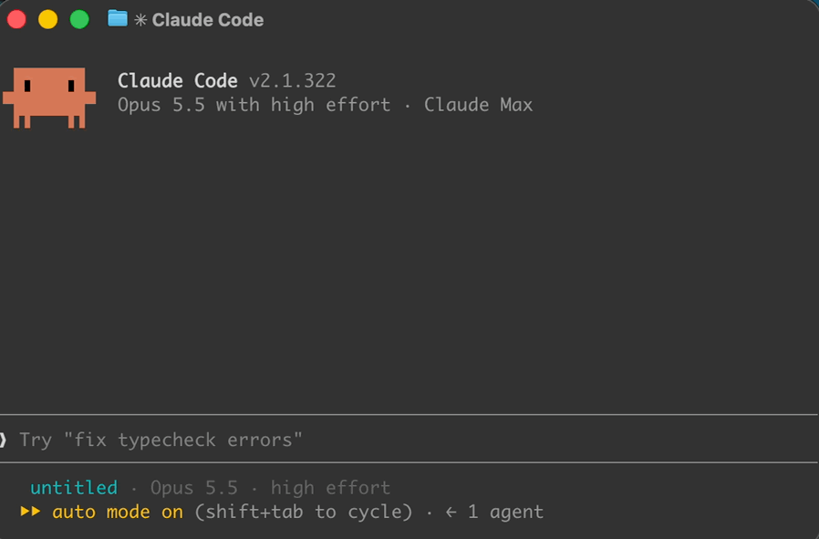
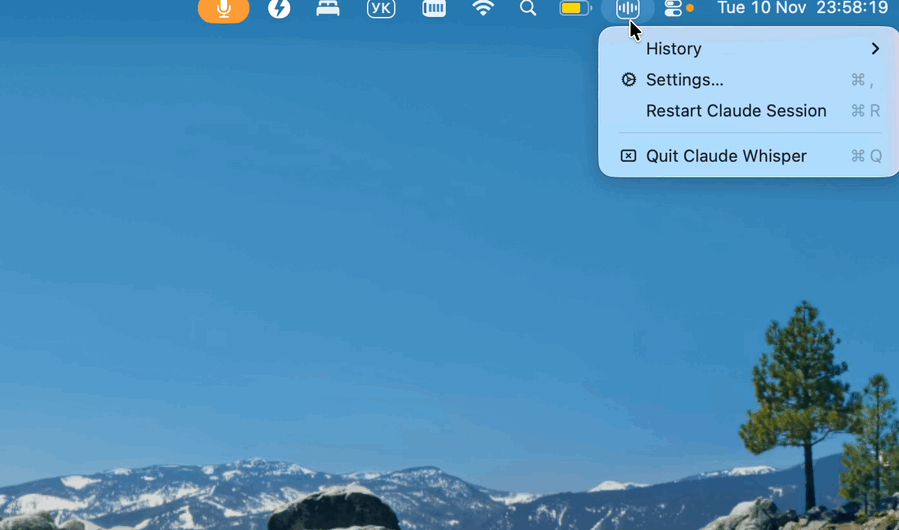
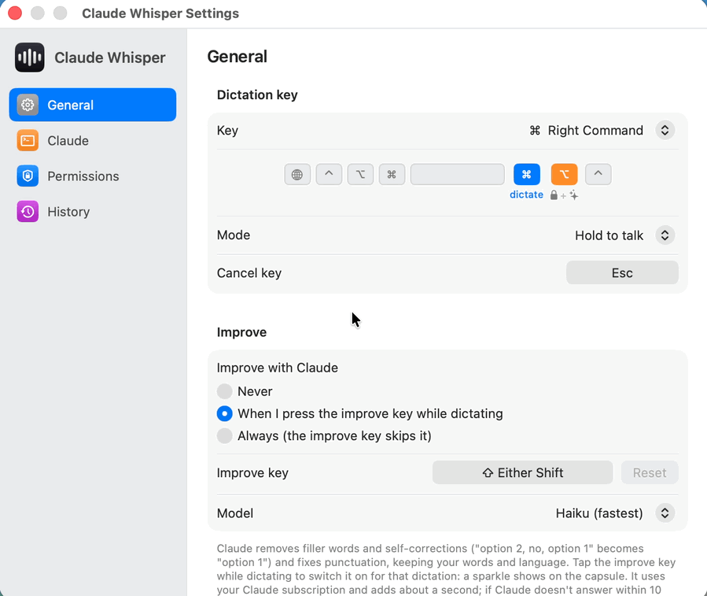

Hold a key. Speak. Let go.
The text is typed where your cursor is, in any app. is completely free: it runs on Claude Code’s own voice dictation and the Claude account you already use, with no extra subscription, no API key and nothing to pay.
Free download · macOS 14+ · Windows 10/11, first version · needs Claude Code
A small app around a hidden Claude Code session.

Hold the key and talk
A small capsule near the bottom of the screen shows it is listening. The start sound plays once the microphone is really on.
Claude Code transcribes
A hidden Claude Code session, signed in as you, turns speech into text. Nothing is sent to Claude as a message.
It lands at your cursor
The text is pasted into the app you were in, followed by a space, and your clipboard is put back.
The menu bar icon (tray on Windows) has History (the last 30 dictations, click one to copy it), Settings and Restart Claude Session. For the internals, see how it works in the guide.


One key to talk, a few more when you want them.
Hold to talk
Speak, let go, and the text is pasted at the cursor. With Settings › Text set to Paste and press Return, it is sent straight away too, handy in Claude.
Lock, hands-free
Press Right Option while holding, or double-tap Right Command, and it keeps listening after you let go. Tap Right Command to stop: the text is inserted, not sent.
Improve macOS
Claude tidies this dictation up before it is pasted. What it does
Cancel
Discards the dictation. Nothing is pasted.
Shortcuts still work
The dictation key with another key is a normal shortcut; nothing is pasted, what you said is kept in History.
Every key can be changed in Settings. On Windows, Right Ctrl dictates and Right Alt locks.
Think out loud, paste what you meant.
- Removes fillers and self-corrections, and fixes punctuation.
- Restores the spelling of product names and technical terms, keeping your words and language.
- Adds about a second. If Claude doesn’t answer within 10 s, the text is pasted as transcribed.
Tap Shift for one dictation, or set it to always or never in Settings. It runs a separate claude -p on your Claude subscription.
option 2,no,option 1
option 1
Set up in a couple of minutes.
First, Claude Code. Install Claude Code and sign in with your Claude account, then check that voice dictation works: run claude, type /voice and hold Space.
macOS 14 Sonoma or later · Apple silicon or Intel
Download , unzip it and move to Applications.
The app is not notarized, so the first launch is blocked. Click Open Anyway in System Settings › Privacy & Security, or run:
Allow Accessibility (to paste), Input Monitoring (to see the key) and Microphone. Settings opens with a banner that links to each one.
Windows 10/11 · x64 or ARM64 · first version
Download (the latest release also has an -arm64 zip for ARM PCs), unzip it anywhere and run .
The app is not signed, so SmartScreen stops the first launch: click More info, then Run anyway.
Let desktop apps use the microphone in Windows Settings › Privacy & security › Microphone, and turn on Open at login to keep it.
Rather build it yourself? CONTRIBUTING.md has the steps for both apps.
Your account, your computer.
Your own Claude account
Dictation is done by Claude Code, signed in as you. The app does no speech recognition of its own.
No connections of its own
The app itself makes no network connections.
Improve sends text
Improve sends the transcribed text, not audio, to a separate claude -p process.
History stays local
The last 30 dictations are kept on your computer, in the menu’s History.
Questions
Does it cost anything extra?
No. The app is free and open source. Dictation runs on the Claude account you are already signed in with, and Improve uses your Claude subscription. There is no separate API key or service.
What can the Windows version do?
It is a first version for Windows 10 and 11 (x64 and ARM64). It dictates on Right Ctrl and locks with Right Alt. It has no Improve, no capsule position and no Faster start yet.
Which languages does it understand?
The ones Claude Code’s voice dictation supports. Pick the dictation language in Settings › Claude.
Why does macOS ask for the permissions again after an update?
Release builds are ad-hoc signed rather than notarized, which is also why the first launch needs Open Anyway. A build signed with your own Apple Development certificate keeps the permissions; CONTRIBUTING.md shows how to build it.
The key does nothing. What now?
On macOS, check the three permissions, then quit and reopen the app. Another app or a Karabiner rule on the same key has to be quit or moved, or you can pick a different dictation key in Settings.
The capsule says “Claude didn’t start listening”.
Check that /voice works in claude itself, then choose Restart Claude Session from the menu.
Is this made by Anthropic?
No. It is an unofficial, independent project, not made by, affiliated with or endorsed by Anthropic.